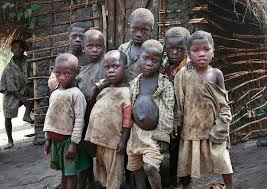

Hello!
I'm sugi, this is my first blog, I've thaught about luck and I am happy to share my ideas about that.
I hope you will be enjoy to read my blog.
Lucky $ Unlucky
Have you ever thought about why do people not the same situation, some people are successful whereas some are not?It spends almost all of my break time when I am doing nothing to think about why people are so different? there are some ways that we can categorize the people whether they are lucky or not.
-
lucky
This is interesting, everythings which he wanted to be done, it is easy for him, and it is even the best ever.For example a researcher, some of them can find information only a week, however some of them take a year to solve a problem. What is more, some people think that they are the luckiest in the world,because they have done thing amaizing, they are well known in the world they got everythings that they wanted. Could they do that if they are from the poorest ancestor? So who can say that they chose their ancestor? One persone is successful for his or her life because of supporting by their family, neighbour, country and the world. People categorise that person as a lucky person because her or his family can provide him or her for everythings that he or she wanted, his or her neigbour encourage them, their country consider that they are an imporatant people, and they word classify them as smart people. Needless to say that the can be succeful in a easy way. They can get whatever they want. Where do you think their luck from? Or you still think that it is mystery?
-
Unlucky
This is so sad, some people can even find their food for eating during a day, how can they survive? Everythings that they trying to do are fail. No one care about them! Their familly escape them but they are their responsibility, no one encourage them.I want you to take a minute to think what would you do if you are in their case. Some people classify them as an unluckiest in the world, but did they wanted to be like that? Is that their willing? Some people may think that they are lazy, how can you be succeful without an encouragement even if you are diligent? How many people want to be volunteer to help those classified to be unluckiest in the word? If someone try to help them are they still unlucky?
